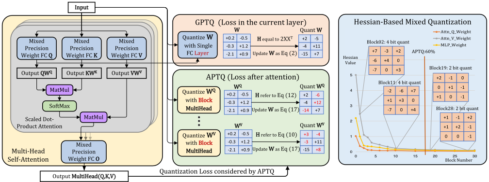
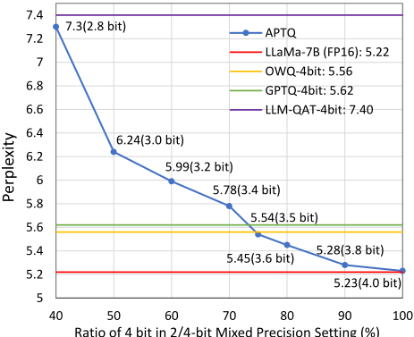

APTQ：面向大语言模型（LLM）的注意力感知训练后混合精度量化
说明：任务头部给出的标题（LLM-assisted Automated Incremental Proof Generation for Hardware Verification）与正文实际内容不符，正文实为 DAC'24 论文 APTQ，本评估完全基于正文。该文针对大语言模型（LLM）计算负载高、模型体积大、难以在边缘设备部署的问题，指出 GPTQ 等现有 PTQ 方法仅在单层线性范围内优化权重量化、忽略注意力中 softmax 等非线性效应而导致次优。APTQ 将量化目标扩展到整个注意力块（Q/K/V/O 矩阵、matmul 与 softmax），基于注意力输出梯度经 Levenberg-Marquardt 近似计算 Hessian，并以各层平均 Hessian trace 作为敏感度指标实现 2/4-bit 混合精度分配。在 LLaMA-7B/13B 上，平均 4-bit 时 C4 困惑度为 5.22、仅比全精度高 0.01；平均 3.8-bit 时 zero-shot 准确率分别达 68.24% 与 70.48%，为 SOTA。该文属于 LLM 模型压缩算法研究，与团队 7 个能力域均无直接交集。
大语言模型（LLM）计算负载与内存占用极高，难以部署到边缘设备；现有训练后量化（PTQ）方法（如 GPTQ）将权重量化局限在单层线性范围内最小化 ||WX−ŴWX||²₂，未考虑注意力计算中 softmax 等复杂非线性效应，导致低比特量化结果次优。
提出 APTQ 两阶段算法。第一阶段将量化重构目标从单层权重扩展到整层注意力块（含 W_Q/W_K/W_V/W_O 投影、matmul 与 softmax 非线性），对注意力输出 F(Multihead(Q,K,V)) 建立新的平方误差目标；采用 Levenberg-Marquardt 近似（仅保留一阶导数项）得到正定可逆的 Hessian 矩阵，并分别推导量化 W_O、W_V、W_Q/W_K 时的偏导数，在 OBQ/GPTQ 框架上按 block 迭代量化权重并补偿剩余浮点权重误差。第二阶段计算各层平均 Hessian trace 并降序排序，按 4-bit 权重比例 R 将敏感度高的层分配 4-bit、其余层 2-bit，实现 2/4-bit 混合精度量化。
LLaMA-7B 平均 4-bit 量化后在 C4 数据集上困惑度为 5.22，仅比全精度高 0.01，接近全精度水平
平均 3.8-bit（2/4 混合精度）下，LLaMA-7B 与 LLaMA-13B 的 zero-shot 平均准确率分别达 68.24% 与 70.48%（SOTA）；LLaMA-7B 相比全精度平均准确率仅下降 0.32 点
平均比特率降至 3.5 与 3.0 时，APTQ 困惑度仍与 GPTQ 4-bit 模型相当；低于 3 bit 的配置仍超过 4-bit LLM-QAT 基线
平均 3.6 或 3.5 bit 时，APTQ 仍持续优于多数 4-bit PTQ 模型
消融实验显示，在多种量化比例下 APTQ 的 C4 困惑度均低于人工 block-wise 均匀混合精度量化方案
相对 GPTQ：首次将注意力输出的非线性效应（softmax 与 matmul）纳入量化目标函数，而非仅在单层线性范围内优化；相对 HAWQ-V2：不用 Hutchinson 算法近似估计，而是用 Levenberg-Marquardt 近似直接对注意力输出计算 Hessian trace；相对 PB-LLM 的 1-bit/fp-16 混合方案：采用 2/4-bit 混合精度，在相同模型体积下取得更好精度。
相关度级别：low
命中能力域：无明显对应
理由：正文实际内容为面向 LLM 的训练后混合精度量化算法 APTQ，属于模型压缩/高效推理领域，与任务头部所给标题（LLM-assisted Automated Incremental Proof Generation for Hardware Verification）不一致，上游 catalog 标签 2.5/2.7 疑似基于该标题误标。对照团队 7 个能力域逐项核查：该文不涉及 IP 架构与微架构、RTL 设计与实现、时序与物理实现、UVM/覆盖率等验证方法学、形式验证与等效性检查、仿真加速/Emulation/FPGA 原型，也不属于 2.7 所定义的'LLM/AI 辅助 RTL 生成/验证/bug 分析'——它压缩的是 LLM 模型本身以利边缘部署，而非用 LLM 辅助硬件验证流程，故 7 个域均无实质关联，判定为无明显对应、低相关。
建议动作：暂不相关
arXiv:2402.14866v2 [cs.LG] 2024年4月16日
Ziyi Guan 1 , 2 ∗ , Hantao Huang 1 ∗ , Yupeng Su 1 , Hong Huang 1 , Ngai Wong 2 , Hao Yu 1 南方科技大学微电子学院，中国深圳 1 香港大学电机电子工程系，中国香港 2
大语言模型（LLM）极大地推动了自然语言处理范式的发展。然而，高计算负载和庞大的模型规模给其在边缘设备上的部署带来了巨大挑战。为此，我们提出了面向 LLM 的 APTQ（Attention-aware PostTraining Mixed-Precision Quantization，注意力感知的训练后混合精度量化）方法，该方法不仅考虑了每一层权重的二阶信息，还首次考虑了注意力输出对整个模型的非线性影响。我们利用 Hessian 迹作为混合精度量化的敏感度度量，确保在有依据的情况下降低精度并保持模型性能。实验表明，APTQ 超越了以往的量化方法，在 C4 数据集上实现了平均 4 比特位宽下 5.22 的困惑度，几乎与全精度相当。此外，APTQ 在平均位宽为 3.8 的条件下，在 LLaMa-7B 和 LLaMa-13B 上分别取得了 68.24% 和 70.48% 的最先进零样本准确率，证明了其生成高质量量化 LLM 的有效性。
· 计算方法学 → 自然语言生成。
大语言模型、量化、混合精度量化、基于注意力的量化、Hessian 矩阵敏感度
Ziyi Guan 1,2∗、Hantao Huang 1∗、Yupeng Su 1、Hong Huang 1、Ngai Wong 2、Hao Yu 1。2024。APTQ：面向大语言模型的注意力感知后训练混合精度量化（Attention-aware Post-Training Mixed-Precision Quantization for Large Language Models）。载于第61届 ACM/IEEE 设计自动化会议（61st ACM/IEEE Design Automation Conference, DAC '24），2024年6月23日至27日，美国加利福尼亚州旧金山。ACM，美国纽约州纽约，共6页。https://doi.org/10.1145/3649329.3658498
大语言模型（Large Language Models, LLMs），例如 ChatGPT [14]、OPT [19]、LLaMA [17] 等，在各类任务中展现出令人瞩目的性能。然而，由于这些模型的计算需求与内存占用极为庞大，将其部署到边缘设备上颇具挑战性。现有的模型压缩方案，如剪枝 [1] 和神经架构搜索 [2]，通常需要对模型进行重新训练，这对于拥有数十亿参数的模型而言极其耗时且代价高昂。近来，诸如 GPTQ [6] 等训练后量化（post-training quantization, PTQ）方法相继被提出，并在无需重新训练的情况下取得了相对较高的精度。然而，GPTQ 仅将单层范围内的权重量化策略视为一个优化问题，以最小化 | | 𝑾𝑿 - ˆ 𝑾𝑿 | | 2 2，其中 𝑾、ˆ 𝑾 和 𝑿 分别表示浮点权重、量化权重和输入。这种简化未能考虑诸如注意力计算中 softmax 等复杂且非线性的效应，从而导致次优解。
∗ 同等贡献。
在保证拷贝不因营利或商业优势目的而制作或分发、且拷贝首页带有本声明及完整引用信息的前提下，允许免费为个人或课堂使用制作本作品全部或部分的数字或硬拷贝。本作品中归作者之外他人所有的组件之版权必须予以尊重。允许注明出处的摘录。若以其他方式复制、再版、发布至服务器或再分发至列表，则需事先获得特定许可和/或支付费用。如需申请许可，请联系 permissions@acm.org。
© 2024 版权归所有者/作者所有。发表权授权予 ACM。ACM ISBN 979-8-4007-0601-1/24/06...$15.00 https://doi.org/10.1145/3649329.3658498
此外，APTQ 提出了一种新颖的基于 Hessian 迹的量化敏感度度量，以实现混合精度量化，从而进一步压缩 LLM 模型。该方法在模型各参数间审慎地采用不同的位宽，以适应边缘设备上有限的内存容量，并在模型规模与精度之间取得平衡。由此，APTQ 构成了一种混合精度的 2/4 比特混合方案，其性能可与统一的 4 比特表示相媲美。特别地，APTQ 所生成的压缩模型接近其全精度对应模型，并优于 GPTQ 方法，尤其是在超低比特量化场景中。通过在 LLaMA-7B 和 LLaMA-13B 模型 [17] 上开展的全面实验，APTQ 的有效性在困惑度和零样本性能两方面均得到验证，从而为 LLM 在边缘设备上的部署提供了一种可行的解决方案。
为了在不牺牲边缘设备精度的前提下实现更低的位宽，本文提出了一种注意力感知的训练后混合精度量化（Attention-aware Post-Training Mixed-Precision Quantization, APTQ）技术，该技术旨在将量化优化问题纳入包含非线性 softmax 操作的注意力块范围内加以考虑。具体而言，APTQ 利用由注意力输出导出的梯度，并开发了一种二阶 Hessian 优化策略来量化权重。通过这种方式，APTQ 显著降低了这些关键组件中的量化误差，从而在整个压缩过程中保持了模型的完整性。
本文的主要贡献有三个方面：
C4 数据集 [15]，而且在平均 4 比特的量化下达到了接近全精度的困惑度。在零样本任务中，APTQ 也展现出优于最先进（SOTA）方法的性能。
为了在边缘设备上部署大模型，量化是一种降低模型尺寸和计算量的通用技术。量化感知训练（QAT）通过将量化过程融入训练过程而被认为行之有效。一项代表性工作是 LLM-QAT [12]，它提出了无数据蒸馏。然而，该方法引入了新的可训练参数，需要高端 GPU 计算资源，并且耗时较长。相比之下，训练后量化（PTQ）以适度的资源对预训练模型进行量化，而无需重新训练模型。近期工作，如 SpQR [3] 和 SqueezeLLM [8]，将大多数权重压缩到 4 比特，但将离群权重保持在 16 比特，这使得推理过程因同时存在 4 比特和 16 比特推理而变得复杂。
混合精度量化为边缘设备提供了一种权衡策略，即在最小化模型尺寸的同时保持精度。现有工作通常定义一些度量来确定每一层的量化敏感度。一项代表性工作是 HAWQ-V2 [4]，它采用 Hessian 迹评估 CNN 层的敏感度，并利用 Hutchinson 算法近似估计 Hessian 迹。我们的 APTQ 方法同样采用 Hessian 迹来评估敏感度，但采用 Levenberg-Marquardt 近似 [9] 直接计算关于注意力输出的 Hessian 迹，这也是对 GPTQ [6] 的扩展，即进一步考虑了注意力输出中的非线性运算（softmax）和矩阵乘法（matmul）。另一项密切相关的工作是 PB-LLM [16]，它基于 Hessian 值采用 1 比特与 fp-16（半浮点）混合精度。极低比特量化（1 比特）对精度而言极具挑战性。然而，我们的 APTQ 方法选择 2 比特与 4 比特的混合精度量化，在与 PB-LLM 相同的模型尺寸下提供了更好的精度。该策略的有效性在第 4 节中得到验证，与 PB-LLM 相比，我们的方法在效率和模型压缩方面表现出更优的性能。
SmoothQuant [18] 引入了一种逐通道缩放变换，有效平滑了幅值，以应对激活量化的挑战。GPTQ [6] 和 OBQ [5] 提出了一种基于近似二阶信息的创新权重量化方法，确保了量化过程的高精度和高效率。我们的工作与 GPTQ 理念相同，但额外考虑了注意力计算中的 softmax 和 matmul 运算来构建量化问题，从而获得了更高的精度。
本节首先介绍预备知识，概述量化技术从最优脑量化（OBQ）[5] 到我们提出的基于 Hessian-注意力量化方法的演进历程。随后，我们提出注意力感知的训练后混合精度量化（Attention-aware Post-Training Mixed-Precision Quantization, APTQ），以进一步压缩大语言模型（LLM）。
通用量化框架。量化旨在降低神经网络中权重的精度，从而节省计算资源。其总体目标是找到一个量化权重矩阵 ˆ 𝑾，使其逼近全精度输出，并使平方误差最小化。该过程可以形式化地表示为：
最优脑量化（OBQ）。最优脑量化（OBQ）[5] 是一种创新方法，它通过独立处理神经网络中的每个权重来最小化量化误差。OBQ 的核心在于迭代地量化每个权重，并调整其余未量化的权重以补偿量化引入的误差。该方法在数学上表述如下：
在该公式中，𝑿 表示该层的输入，ˆ 𝑊 表示量化后的权重。
Hessian 矩阵 𝐻 𝐹 = 2 𝑋 𝐹 𝑋 𝑇 𝐹 指导从全精度权重 𝐹 中选择量化候选 𝑤 𝑞，并计算更新量 𝛿 𝐹 以最小化量化误差，如公式 (2)、(3) 和 (4) 所形式化给出，其中 quant ( 𝑤 ) 将权重映射到其最近的量化值。在 OBQ 的基础上，GPTQ [6] 通过采用固定顺序的权重更新策略和 Cholesky 重构来加速计算，从而对上述原理进行了扩展。
虽然 GPTQ 能够有效最小化特定层的量化误差，但它忽略了注意力机制中复杂的非线性特性，从而导致次优结果。相比之下，APTQ 采用了一种整体性的量化策略，将整个注意力块及其非线性动态纳入考量，从而提升了量化模型的精度，尤其是在低位宽场景中。
目标函数。在宏观层面上，我们的方法采用逐层量化方法来解决每层权重的量化重构问题。在 Transformer 架构中，存在两个主要的结构层级：注意力层和前馈层。具体而言，与将每个权重矩阵视为线性层并忽略其他结构对输出影响的 GPTQ 不同，我们将同一层的所有结构视为一个整体，用函数表示为
如图 1 所示，我们展示了 APTQ 的先进架构，体现了其全面的量化策略。与主要处理当前层损失的 GPTQ 不同，APTQ 对注意力机制进行了全范围的分析，包括 𝑄、𝐾、𝑉、𝑂 矩阵、matmul 以及 softmax 等非线性激活层。这种全面的方法不仅关注了简单权重矩阵乘法之外的复杂细节，还显著减轻了量化误差，为低位宽量化场景提供了稳健的解决方案。

其中 𝐹 表示注意力输出 Multihead ( 𝑄, 𝐾,𝑉 )。我们旨在重新表述公式 (1)，并最小化如下新的平方误差方程：
其中 𝑊 保持不变，ˆ 𝑊 是待优化的量化权重。该函数的 Hessian 矩阵计算如下：
这是 Hessian 矩阵的一般表达式。为确保 𝐻 ˆ 𝑊 是正定且可逆的，我们仅保留一阶导数部分作为 Hessian 矩阵的表达式，这被广泛称为 Levenberg-Marquardt 近似 [9]：
不同量化层的导数。当前问题被转化为求 𝐹 ( ˆ 𝑊 ) 关于权重 ˆ 𝑊 的偏导数。𝐹 ( ˆ 𝑊 ) 函数对于前馈层和注意力层是不同的。在前馈层中，主要结构是线性全连接层。Hessian 矩阵很容易计算为 𝐻 𝐹 = 2 𝑋 𝐹 𝑋 𝑇 𝐹 ，对应于 GPTQ 方法中的 Hessian 矩阵形式。
在注意力层中，采用了多头机制，其中每个注意力头包含一个 Attention 函数：
量化后的权重矩阵会导致不同的导数。在量化 𝑊 𝑂 矩阵时，将 𝑊 𝑄 、𝑊 𝐾 、𝑊 𝑉 视为常数：
在量化 𝑊 𝑉 矩阵时，将 𝑊 𝑄 、𝑊 𝐾 、𝑊 𝑂 视为常数：
这里，𝑀 表示由 𝐻 个去掉 𝑊 𝑉 𝑖 的头所组成的矩阵：
在量化 𝑊 𝑄 或 𝑊 𝐾 矩阵时，将其余三项视为常数：
缩放因子、零点以及量化误差。
如第 2 节所述，Hessian 迹为实现混合精度量化提供了敏感度信息。图 1 展示了 APTQ 方法对 4 位与 2 位量化的分配方式，该方法利用平均 Hessian 迹值作为衡量层敏感度的指标。这一方法与 GPTQ 方法有所不同：GPTQ 仅专注于当前层内的矩阵乘法，而 APTQ 则对每一层的影响提供全面评估。
通过计算 Hessian 矩阵的平均迹，该方法为每一层的量化确定适当的精度等级。Hessian 迹值较高的层对网络输出具有更大的影响，因而需要更高的位精度以确保模型的准确性。采用这种混合精度量化方案所得到的模型，其平均位精度由如下公式定义：
其中 𝑅 表示在整体量化过程中以 4 位进行量化的权重所占的比例。该公式是 APTQ 方法论的一个关键方面，有助于实现动态调整，这对于在边缘设备上部署大语言模型尤为有利。𝑅 的可调节性使 APTQ 算法能够为敏感度更高的层分配更高的精度，同时对敏感度较低的层施加更为稳健的量化。由此得到的量化模型能够在性能与规模之间实现最佳平衡，适合部署于边缘设备。
在算法的第二阶段，实施混合精度量化策略，首先计算各层的 Hessian 迹值。随后将这些值按降序排列，从先前以 4 位量化的层开始。这一排序为后续混合精度量化中层的选择提供依据，量化过程依据计算得到的 Hessian 迹值执行。这种选择性量化过程旨在与每一层对整体模型的功能影响紧密契合，从而确保量化方案既有效又高效。
算法 1 展开为两个关键步骤，旨在提升模型效率的同时保持性能。步骤 1 对注意力机制的 𝐾（key）层施加 4 位量化，其指导依据是 Hessian 矩阵 𝐻 𝐾 ˆ 𝑊，该矩阵包含对此优化至关重要的二阶导数，如公式 (13) 所示。此步骤在调整 𝐾 层权重精度的同时，兼顾其对模型性能的更广泛影响。𝐾、𝑄、𝑉 和 𝑂 各层的单独优化均由各自的 Hessian 矩阵提供指导，确保量化精准定位，以维持效率与准确性之间的平衡。从本质上讲，基于 Hessian-Attention 的量化策略性地细化注意力层内的权重精度，从而在不引入不必要计算负担的前提下保持模型准确性。
为了评估 APTQ 的性能，我们关注两个主要指标：困惑度（perplexity）和零样本（zero-shot）性能。LLaMa 系列模型 [17] 是我们实验的基础，这得益于其高效性及其在近期模型进展中的关键影响力。为保持一致性与可比性，我们与 GPTQ 的基准对比遵循完全相同的实验配置。我们的校准数据集包含 128 个片段，每个片段包含从 C4 数据集中随机采样的 2048 个 token。所有实验均采用 128 的分组大小（group size），并在单块具有 80GB 显存的 NVIDIA A100 GPU 上执行。我们的 APTQ 直接 APTQ: Attention-aware Post-Training Mixed-Precision Quantization for Large Language Models 应用于预训练模型（训练后量化，post-training quantization）。零样本性能的评估使用 EleutherAI/lmevaluation-harness [7] 进行。需要注意的是，我们使用 APTQ-R 的格式来表示混合精度（2/4 比特）设置，其中 𝑅 表示 4 比特权重的百分比，如公式 (18) 中所讨论的。
| Method | Avg bit | C4 ↓ | WikiText-2 ↓ |
|---|---|---|---|
| LLaMa-7B | 16 | 5.22 | 5.68 |
| GPTQ [6] | 4 | 5.62 | 8.14 |
| OWQ[10] | 4.01 | 5.56 | 7.15 |
| LLM-QAT [12] | 4 | 7.4 | 10.9 |
| PB-LLM-20% [16] | 3.4 | 20.61 | 17.19 |
| APTQ | 4 | 5.23 | 6.45 |
| APTQ-75 % | 3.5 | 5.54 | 6.54 |
| APTQ-50 % | 3 | 6.24 | 6.76 |
| Method | Avg bit | C4 ↓ | WikiText-2 ↓ |
We assess the the performance of APTQ using the C4 [15] and WikiText-2 [13] benchmarks. We compare APTQ against three established PTQ methods: GPTQ [6], OWQ [10], and PB-LLM [16]. Notably, OWQ and PB-LLM extend upon GPTQ, with PB-LLM incorporating mixed-precision quantization. To ensure a balanced comparison, all methods are evaluated on a standardized platform. Moreover, we benchmark APTQ's performance with the leading QAT approach, LLM-QAT. Table 1 reveals that APTQ, at an average 4 bit, closely matches the full-precision model and attains SOTA performance on the C4 dataset, showing only a 0.01-point increase in perplexity. Remarkably, even with average bit rates reduced to 3.5 and 3.0, APTQ's perplexity remains comparable to that of GPTQ's 4-bit model. This evidence of APTQ's stability at low bit rates positions it as a potent tool for optimizing the quantization and deployment of large-scale language models like LLaMa-7B.
Figure 2 visually summarizes our findings. It presents the comparative perplexity results of the LLaMa-7B model using APTQ at various bit utilization ratios when benchmarked against other PTQ and QAT methods on the C4 dataset. As depicted in the figure, the APTQmodel consistently maintains competitive performance, even at significantly reduced bit rates. This graphical representation reinforces the effectiveness of the Hessian trace-based mixed-precision approach we advocate in this study, illustrating its potential for resource-efficient large model deployment.
To substantiate the robustness and broad applicability of the Hessian trace-based mixed-precision quantization posited in our study, we conducted a comparative analysis of various 4-bit utilization levels of APTQ against other prevalent PTQ methods applied to the LLaMa-7B model on the C4 dataset. The APTQ model, quantized at an average of 4 bit, not only approaches the full-precision model's perplexity but also outperforms all other PTQ approaches at a reduced precision of 3.5 bits. Impressively, configurations below 3 bits still surpass the 4-bit LLM-QAT baseline, underscoring APTQ's efficacy. These results unequivocally demonstrate the superior performance of APTQ, leveraging Hessian trace-driven precision allocation to optimize quantization outcomes.
在零样本性能评估中，我们将研究扩展至一系列具有挑战性的零样本语言任务。这些任务，2/4位混合精度设置中4位所占比例（%）

如表2所示，我们将APTQ框架与应用于LLaMa-7B模型的当前最先进（SOTA）训练后量化（PTQ）方法进行了基准对比。我们的研究结果表明，当APTQ配置为3.8位时，仍能保持极其微小的精度偏差，与全精度模型相比，平均精度下降仅为0.32点。即使将APTQ优化至平均3.6位或3.5位，它仍能始终优于大多数4位PTQ模型。这些发现表明，APTQ在仅使用极少位宽的情况下便能在零样本任务中表现出色，突出了其在计算资源受限环境中部署大规模语言模型的有效性。这凸显了APTQ在资源高效性能方面的优势。
此外，我们进行了一项消融研究，以验证 APTQ 相对于手动分块量化方案的优越性。鉴于量化是逐层执行的，最直观的混合精度量化策略是对每个块内的所有层进行统一量化。在此，我们在 C4 数据集上测试的 LLaMa-7B 模型上将这种传统方法与 APTQ 进行比较，并以困惑度作为评估指标。表 3 中的结果表明，对于 C4 上的 LLaMa-7B，APTQ 优于手动分块量化，这体现在其在各种量化比例下始终具有更低的 PPL。
本文提出了一种注意力感知的训练后混合精度量化（APTQ）算法，用于将大语言模型（LLM）量化为混合精度。APTQ 是一种颇具前景的训练后量化策略，其利用每层权重的二阶信息，同时考虑了注意力输出的非线性效应。此外，本文将 Hessian 迹发展为一种敏感度度量，以进一步实现混合 2/4 比特精度。对于 LLM LLaMa-7B，APTQ 超越了以往的量化方法，在 C4 数据集上实现了平均 4 比特、困惑度 5.22 的结果，几乎等同于全精度。此外，在零样本（zero-shot）LLM 设置下，APTQ 在平均位宽为 3.8 时分别对 LLaMA-7B 和 LLaMa-13B 取得了 68.24% 和 70.48% 准确率的最先进结果，这表明 APTQ 能够在不牺牲准确率的情况下为大语言模型实现深度量化解决方案。
| Model.Method | LLaMa-7B.Avg bit | LLaMa-7B.PIQA | LLaMa-7B.Hellaswag | LLaMa-7B.Arc-E | LLaMa-7B.Arc-C | LLaMa-7B.WinoGrande | LLaMa-7B.𝐴𝑐𝑐 % ↑ | LLaMa-7B.PIQA | LLaMa-13B.Hellaswag | LLaMa-13B.Arc-E | LLaMa-13B.Arc-C | LLaMa-13B.WinoGrande | LLaMa-13B.𝐴𝑐𝑐 % ↑ |
|---|---|---|---|---|---|---|---|---|---|---|---|---|---|
| FP16 | 16 | 79.2 | 76.2 | 72.8 | 44.7 | 69.9 | 68.56 | 80.3 | 79.0 | 74.8 | 47.9 | 72.7 | 70.94 |
| RTN [12] | 4 | 77.3 | 72.7 | 68.8 | 43.1 | 66.9 | 65.76 | 79.1 | 76.8 | 72.6 | 46.5 | 70.5 | 69.10 |
| SmoothQuant [18] | 4 | 76.4 | 68.1 | 67.3 | 39.6 | 66 | 63.48 | 77.9 | 74.2 | 76.3 | 45.5 | 69.7 | 68.72 |
| FPQ [11] | 4 | 77.8 | 75 | 72.4 | 41.7 | 69 | 66.6 | 79.4 | 77.7 | 72.8 | 47.3 | 71.5 | 69.74 |
| LLM-QAT [12] | 4 | 78.3 | 74 | 70 | 41.7 | 69 | 66.6 | 79.4 | 77.7 | 72.8 | 47.3 | 71.5 | 69.74 |
| GPTQ [6] | 4 | 76 | 69.4 | 66.9 | 43 | 66.7 | 64.4 | 79.8 | 77.7 | 73.2 | 45.9 | 72.6 | 69.84 |
| PB-LLM 30% [16] | 4.1 | 78 | 74.3 | 69 | 42.3 | 69.7 | 66.66 | - | - | - | - | - | - |
| PB-LLM 10% [16] | 2.7 | 67.8 | 68.1 | 58.7 | 39.6 | 67.4 | 60.32 | - | - | - | - | - | - |
| APTQ | 4 | 78.6 | 75.7 | 72.4 | 44.4 | 69.3 | 68.08 | 79.9 | 78.8 | 73.9 | 47.0 | 72.1 | 70.34 |
| APTQ-90% | 3.8 | 78.8 | 75.9 | 73.6 | 43.5 | 69.4 | 68.24 | 79.4 | 78.8 | 73.8 | 47.8 | 72.6 | 70.48 |
| APTQ-80% | 3.6 | 78 | 75.3 | 70.2 | 43.7 | 69.5 | 67.34 | 79.5 | 78.2 | 72.8 | 46.5 | 72.6 | 69.92 |
| APTQ-75% | 3.5 | 77.5 | 74.5 | 68.7 | 44.2 | 70.2 | 67.02 | 79.3 | 77.6 | 71.8 | 46.1 | 73.2 | 69.60 |
| APTQ-70% | 3.4 | 77.6 | 73.4 | 66.9 | 41.3 | 68.9 | 65.62 | 78.3 | 77.5 | 71.4 | 46.3 | 72.5 | 69.20 |
| APTQ-60% | 3.2 | 76.8 | 72.1 | 63.1 | 39.3 | 69.5 | 64.16 | 78.6 | 74.2 | 69.5 | 44.2 | 69.5 | 67.20 |
| APTQ-50% | 3 | 74.5 | 68.3 | 57.9 | 36.4 | 65.3 | 60.48 | 74.4 | 71.2 | 64.1 | 41.0 | 68.0 | 63.74 |
| Model.Method | LLaMa-7B.Avg bit | LLaMa-7B.PIQA | LLaMa-7B.Hellaswag | LLaMa-7B.Arc-E | LLaMa-7B.Arc-C | LLaMa-7B.WinoGrande | LLaMa-7B.𝐴𝑐𝑐 % ↑ | LLaMa-7B.PIQA | LLaMa-13B.Hellaswag | LLaMa-13B.Arc-E | LLaMa-13B.Arc-C | LLaMa-13B.WinoGrande | LLaMa-13B.𝐴𝑐𝑐 % ↑ |
| Method | Ratio of 4-bit | Avg bit | Perplexity ↓ |
|---|---|---|---|
| Manual Block-wise | 75% | 3.5 | 5.84 |
| APTQ-75 % | 75% | 3.5 | 5.54 |
| Manual Block-wise | 50% | 3 | 7.04 |
| APTQ-50 % | 50% | 3 | 6.24 |
| Method | Ratio of 4-bit | Avg bit | Perplexity ↓ |
This work was supported by Shenzhen Science and Technology Program (Grant No. KQTD20200820113051096), Science and Technology Innovation Committee Foundation of Shenzhen (Grant No. JCYJ20220818100217038), and by the Theme-based Research Scheme (TRS) project T45-701/22-R, Hong Kong SAR.